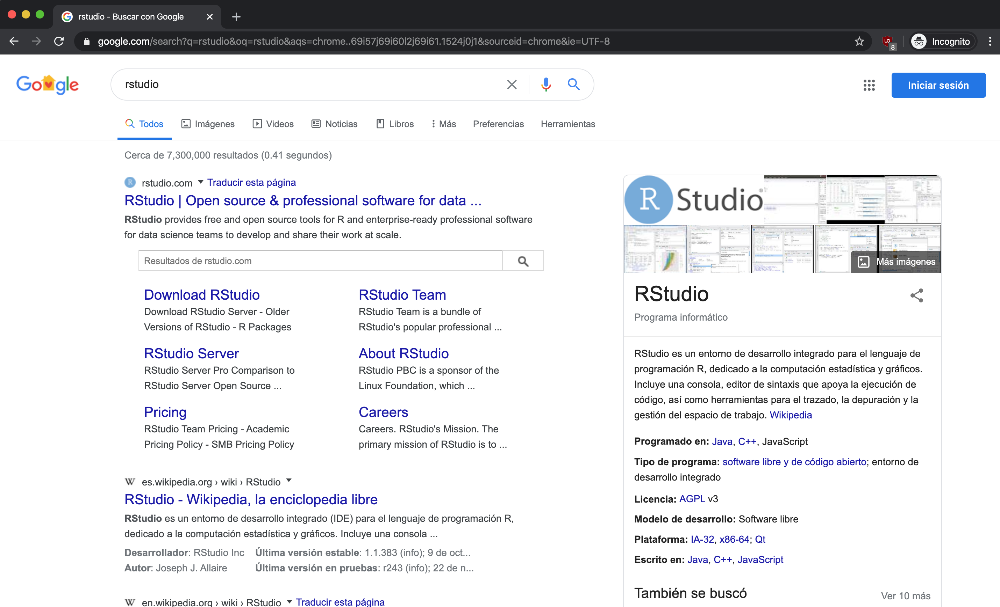

Introduction
What You’ll Learn in This Chapter:
- Understand why R is an excellent choice for data science
- Install R and RStudio on your computer
- Navigate the RStudio interface confidently
- Write and execute your first R code
Data science requires a multidisciplinary approach that combines statistics, programming, data mining, and domain expertise. This book is designed to help you develop those skills through practical, hands-on examples in R.

Why R?
R is a language created by statisticians for data analysis, making it an excellent choice for your data science journey. It is free and open-source, meaning there are no licensing costs and you can inspect how any function works under the hood. Its rich ecosystem includes over 19,000 packages on CRAN covering virtually any analytical task, from machine learning to bioinformatics.
One of R’s strongest features is reproducibility, allowing you to write scripts once and share them with colleagues to obtain consistent results anywhere. It also offers best-in-class visualization through ggplot2 for publication-quality graphics and Shiny for interactive dashboards. Furthermore, you will find an active community with extensive documentation, tutorials, and a welcoming presence on social media.
While Python is also popular in data science, R excels particularly in statistical analysis and data visualization. These are the core skills we will develop throughout this book, leveraging the tidyverse ecosystem to make data manipulation intuitive and readable.
Installing R
You can download R from the Comprehensive R Archive Network (CRAN).
- Search for CRAN on Google:

- On the CRAN page, select the version for your operating system—Linux, Mac OS X, or Windows:

The following steps show the Windows installation process. The steps for Mac and Linux are similar—simply select your operating system and follow the corresponding download link.
- On the CRAN website, click on
baseto download the core R installation. This includes all the basic packages you need to get started. Later chapters will show you how to install additional packages.

- Click on the download link to get the latest stable version:

Once downloaded, run the installer and follow the on-screen instructions.
Installation Tip: When the installer asks about options, the default settings work perfectly for beginners. You can always customize your installation later.
Installing RStudio
Although you could start using R directly in the console, we recommend installing RStudio—an integrated development environment (IDE) that makes working with R significantly more productive and enjoyable.
- Search for RStudio on Google:

- You’ll see the Posit website (RStudio’s parent company). Click on DOWNLOAD in the upper right menu:

- Scroll down until you find the download options. Select the Free RStudio Desktop option:

- The page will display a download button optimized for your operating system. You can also choose from the list of all available installers below:

Once the installer is downloaded, run it and follow the on-screen instructions.
Having trouble? Installation issues are usually straightforward to resolve. Check the CRAN FAQ or search “R installation [your OS]” for community solutions. The RStudio Community is also an excellent resource.
RStudio Sections
When you start RStudio for the first time, you’ll see three main sections:

One of the great advantages of R over point-and-click analysis software is that we can save our work as Scripts—text files containing R code that can be shared, version-controlled, and re-run at any time.
To create a new Script, click on File → New File → R Script:

This opens the fourth panel, giving you the complete RStudio layout:

Let’s understand the layout. The Source Editor in the top-left is where you write and edit your R scripts. Think of it as your code notebook where you can save, organize, and run code. Below it is the Console (bottom-left), where code executes and results appear. You can type commands directly here for quick experiments.
On the right side, the Environment/History panel (top-right) shows all variables and functions you have created in your current session, while the history tab tracks your commands. Finally, the Files/Plots/Help panel (bottom-right) serves multiple purposes, allowing you to browse files, view generated plots, and access package documentation.
Essential Keyboard Shortcuts
Mastering keyboard shortcuts will significantly speed up your workflow. The most commonly used command is running the current line or selection, which you can do by pressing Ctrl + Enter (or Cmd + Enter on Mac). To run the entire script, use Ctrl + Shift + S (Cmd + Shift + S).
Creating a new script is as easy as pressing Ctrl + Shift + N (Cmd + Shift + N), and you should save your work frequently with Ctrl + S (Cmd + S). A shortcut specific to R is inserting the assignment operator (<-), which is done with Alt + - (Option + -). Finally, you can quickly comment or uncomment lines using Ctrl + Shift + C (Cmd + Shift + C).
Pro Tip: Press Alt + Shift + K (Windows/Linux) or Option + Shift + K (Mac) in RStudio to see the complete list of keyboard shortcuts.
Testing Your Installation
Let’s verify everything is working correctly. Go to the Console panel and calculate how much 13 multiplied by 265 is. Click on the console, type the following, and press Enter:
You should see 3445 as the result. Let’s understand the output format:
Understanding R Output:
- The
[1]before the result indicates this is the first element of the output. R can return multiple values, and the bracketed number helps you track which element you’re looking at. - In this book, we use
##to distinguish R output from R code. Lines starting with##show what you’ll see in your console after running the code.
Now let’s try something more interesting. R isn’t just a calculator—it’s a powerful tool for working with data. Try this in your console:
# Create a vector of values
values <- c(10, 20, 30, 40, 50)
# Calculate the mean
mean(values)
#> [1] 30
# How many elements are there?
length(values)
#> [1] 5You’ve just created your first data structure (a vector) and applied functions to it—fundamental concepts we’ll explore in depth in the next chapter.
Writing Scripts
While the console is great for quick experiments, scripts are essential for reproducible work. Try this in the Source Editor (not the console):
# My First R Script
# Calculating basic statistics
# Create some data
temperatures <- c(22, 25, 23, 28, 30, 27, 24)
# Calculate statistics
mean(temperatures) # Average temperature
max(temperatures) # Highest temperature
min(temperatures) # Lowest temperatureTo execute code from the script:
- Run a single line: Place your cursor on the line and press
Ctrl + Enter(orCmd + Enteron Mac) - Run selected lines: Highlight the lines you want to run and press
Ctrl + Enter - Run the entire script: Press
Ctrl + Shift + S(orCmd + Shift + Son Mac)
Notice that lines starting with # are comments—R ignores them, but they’re invaluable for explaining your code to others (and to your future self!).
Challenge: Test Your Setup
Try these exercises to confirm everything works:
- Calculate
sqrt(144)in the console (the square root of 144) - Create a new script with three different calculations and save it as
my_first_script.R - Use the assignment operator (
<-) to store a value:my_number <- 42 - Print your stored value by typing
my_numberand pressing Enter
What’s Next?
Congratulations! You have successfully set up your R environment and written your first R code. You now understand why R is a powerful choice for data science and how to navigate the four panels of the RStudio interface. You have also learned to use the console, write scripts, and apply essential keyboard shortcuts.
In the next chapter, we will dive into R Fundamentals, learning about objects, data types, vectors, and functions that form the foundation of all R programming. You will discover how R stores and manipulates data, setting the stage for the data analysis and visualization techniques to come.
Let’s continue the journey!